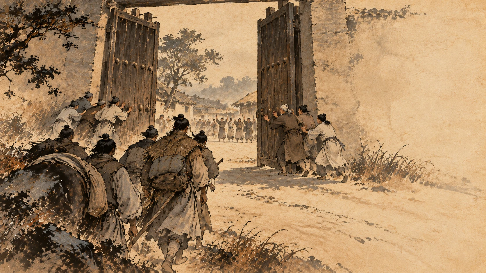
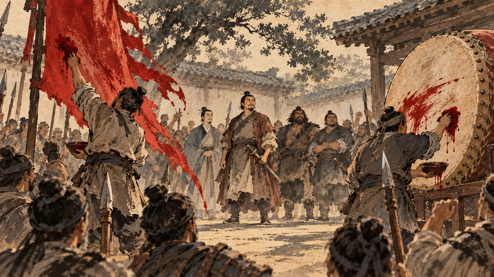

沛县的难题：谁来做首领
一、一个县令的算盘
陈胜称王的消息传到沛县，县令慌了。
《史记》在这里只用了四个字：沛令恐。①
他做了一个决定：沛县也反了吧——他要带着沛县响应陈胜。
这个决定听起来像“弃暗投明”，其实不是。站在他的位置上想：他是秦朝任命的县令，外面正在发生的事是各县的长官被人抓起来杀，他不反就是等着被杀。他反，是为了活。
但他手下两个人给他泼了冷水。
主吏萧何、狱掾曹参说了一段话，我建议你读两遍：
君为秦吏，今欲背之，率沛子弟，恐不听。原君召诸亡在外者，可得数百人，因劫众，众不敢不听。
意思是：您是秦朝的官，现在要背上叛秦的名，带着沛县子弟去干这件事，怕没人听您的。不如把逃亡在外的人召回来，能得几百人；用这几百人压住众人，众人不敢不听。②
这段话厉害在哪儿？
它先一口否掉了县令的资格：你是秦朝的官，你说话不管用。然后给出一个方案：去找一帮本来就回不了头的人，用他们来压住县城里的人。
在那个雨还没干的年代，这是一个非常懂人心的建议。而提建议的这两个人，本身也是秦朝的吏——他们比谁都清楚，“秦朝的官”这个身份在沛县还值多少钱。
二、山上那个人
县令听了，下令去请刘邦。
派去的人是樊哙。
樊哙是谁？《史记》给他的履历只有六个字：以屠狗为事，与高祖俱隐。③
屠狗是他早年的职业；后半句的意思是，刘邦躲在芒砀山那阵子，樊哙也跟他在一块儿。
所以这趟差事他接得很顺——他本来就跟刘邦在一起，下山进一趟县城，把人叫回来。
这里《史记》给了一个数字，很关键：刘季之众已数十百人矣。
刘邦现在手上有几十到一百人。④
对比一下第一章：他放走那批人的时候，跟他走的是十余人。现在是一百人左右。
十几个人变成一百人，靠的是什么？就是第一章那两个词——心独喜，自负。他信了自己身上那点“天命”，而沛县的年轻人也开始信。
三、城门关上了
刘邦来了，带着人往沛县城走。
走到半路，县令反悔了。
《史记》写得很短：沛令後悔，恐其有变，乃闭城城守，欲诛萧、曹。
他怕刘邦真带人进来，县城就不是他的了。而他关上城门之后要做的下一件事，是把萧何和曹参杀掉——因为当初出这个主意的是他们两个。⑤
这个算盘不算错：刘邦的队伍进不来，他就仍然是沛县的县令。
但他忘了一件事——萧何和曹参这时候正在城里。
两人一听说要杀自己，翻墙跑了，去投刘邦。⑥
刘邦手上从此多了一个管钱粮的、一个管刑狱的。这两个人是沛县最会办事的两个人。
四、一封射进城的信
沛县城门关着，外面是刘邦带来的几百人。
刘邦没有打。他做了一件事：在一块帛上写了封信，射进城里，给沛县的父老。
信是这样的：
天下苦秦久矣。今父老虽为沛令守，诸侯并起，今屠沛。沛今共诛令，择子弟可立者立之，以应诸侯，则家室完。不然，父子俱屠，无为也。⑦
翻译：天下被秦朝折腾苦了。你们现在替沛县县令守城，可各地都起兵了，早晚打过来屠城。你们要是现在一起把县令杀掉，挑个沛县子弟当首领，响应诸侯，家室还能保住。不然，父子一起被杀，一点意义没有。
这封信好在哪儿？
它没有一个字是虚的。它既没许好处，也没说自己多有本事——它就是把两个后果摆在桌面上：现在动手，家室可全；等他打进来，父子俱屠。
我读这段时特别注意一个细节：这封信是“射”进去的，不是派人送进去的。刘邦进不了城，所以他没法私下找人说。这封信是给所有人同时看的。
史料没写谁执笔。字是刘邦的，但“天下苦秦久矣”这个路子，跟陈胜在大泽乡对九百人说的话是同一套；而刘邦身边刚刚多了一个管文书的萧何。⑧
五、没人愿意当这个头

城里的反应很快：父老带着子弟，一起杀了沛县县令，打开城门，迎刘邦进来。
然后他们要刘邦当沛县县令。
刘邦拒绝了。他说了一段话：
天下方扰，诸侯并起，今置将不善，壹败涂地。吾非敢自爱，恐能薄，不能完父兄子弟。此大事，原更相推择可者。
天下正乱，诸侯并起，首领选不好会一败涂地。我不敢说自己多高尚，是怕本事不够，保不住父兄子弟。这是大事，请你们另外推举合适的人。⑨
这段话是客套吗？一部分是。但接下来《史记》写的那一句，才是这一章真正的好东西：
萧、曹等皆文吏，自爱，恐事不就，后秦种族其家，尽让刘季。⑩
萧何、曹参都是文官，爱惜自己，怕事办不成，将来秦朝会把他们的家族整个杀光——所以两个人都不肯当，把位置让给了刘邦。
我给你把这句掰开：沛县当时最会办事的两个人，算了一笔账，结论是“这个首领不能当”。
不是谦虚，不是推让，是算账。他们比谁都清楚秦朝的手段——他们本身就在秦朝的系统里当差。当这个首领，一旦失败不是自己死，是全族死；而当副手就不一样了：事情成了有功劳，事情败了，还可以说“我是被裹挟的”。
于是只剩下一个候选人：刘邦。
他之所以能当上，恰恰是因为他是这几个人里唯一没什么可输的那个。他没有官身，没有家族在秦朝体制里的前途，他这会儿已经是个逃犯了。
所以父老们给出的理由是：平生所闻刘季诸珍怪，当贵，且卜筮之，莫如刘季最吉。⑪
平素听说的刘邦那些稀奇事，说明他该贵；而且算了一卦，没有比他更吉的。
你看，第一章那两个传说，到这时候派上用场了。斩蛇、云气，在当时不是花絮，是履历。
刘邦又让了几回。没人敢当。于是立他为沛公。
六、沛公

然后是仪式：
祠黄帝，祭蚩尤於沛庭，而衅鼓旗，帜皆赤。
祭黄帝，祭蚩尤（蚩尤是传说中的兵主），用牲畜的血涂在鼓和旗上，旗帜一律用红色。⑫
为什么是红色？《史记》给了原因：由所杀蛇白帝子，杀者赤帝子，故上赤。⑬
因为那条蛇是白帝子，杀它的人是赤帝子，所以用红。
第一章那个“编出来的故事”，到这里变成了旗子的颜色。
这是我读这一段时最受触动的地方：一个谎，被认真对待之后就不再是谎了——它变成了这支队伍的制服。
接着，少年豪吏如萧、曹、樊哙等，都替刘邦收沛县子弟，共二三千人，去打胡陵、打方与，然后回来守丰邑。⑭
从十几个人，到一百人，到二三千人。
七、帮他的人是些什么人
这里插两个人。你现在不用记住他们后面干了什么，只要记住他们现在是谁。
先说萧何。
《萧相国世家》开头：萧相国何者，沛丰人也。以文无害为沛主吏掾。⑮
“文无害”的意思是精通律令文书、办事不出纰漏。这是很硬的本事——整个沛县，秦朝的法和条文怎么用，他说了算。
更要紧的是《史记》后面那几句：高祖为布衣时，何数以吏事护高祖。
刘邦还是平头百姓时，萧何好几次用职务上的便利护着他。
还有一个细节特别耐看：高祖以吏繇咸阳，吏皆送奉钱三，何独以五。
刘邦去咸阳服徭役那次，同事们凑钱送他，一般送三；萧何送了五。⑯
三，和五。就这么点差别，司马迁专门写下来了。
记住这个“五”。它和第一章那句“刘季固多大言，少成事”，是同一个人说的、同一个人做的。
再说樊哙。他的履历短得多：以屠狗为事，与高祖俱隐。
杀狗卖肉的，跟刘邦一起躲在山里。⑰
这个人后来会成为刘邦手下最能打、也最敢说话的将领之一。他现在的工作，是替刘邦跑腿叫人。
沛公带着二三千人出了沛县，打胡陵、打方与，然后回守丰邑。
丰邑是他的老家，是他出生长大的地方。
而下一章要讲的，是他老家的人背叛了他——带头那个人，叫雍齿。
下一章：丰邑之叛。